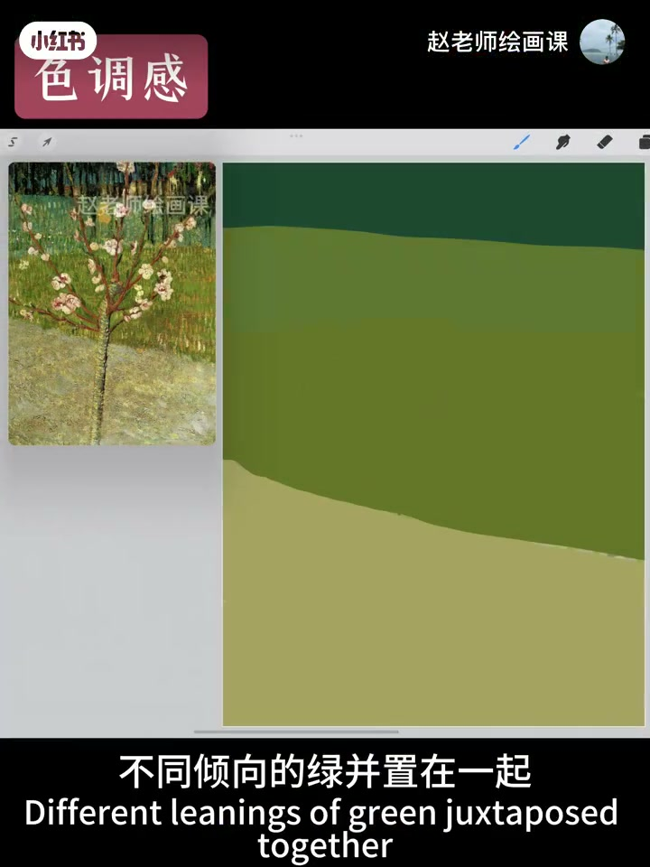
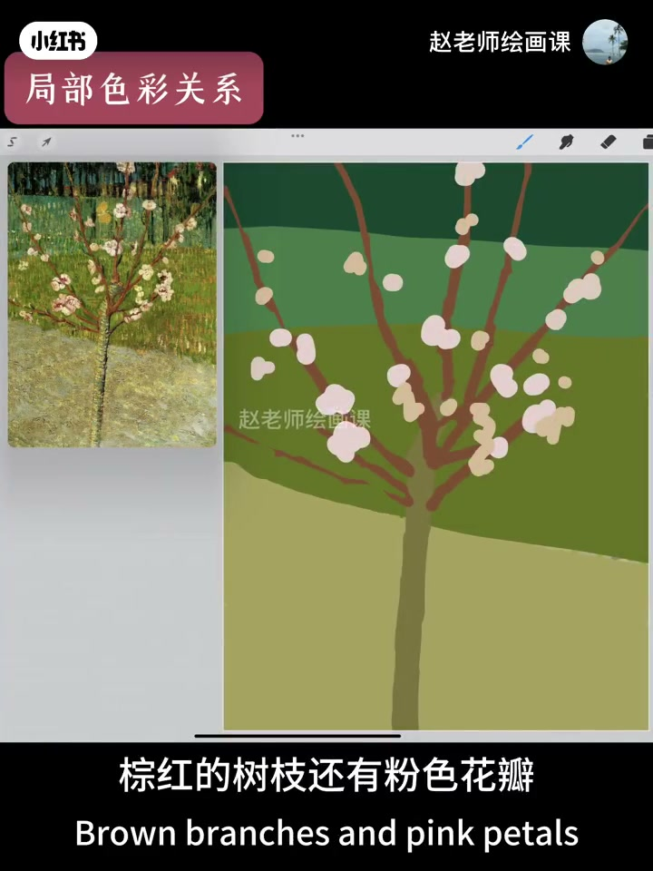
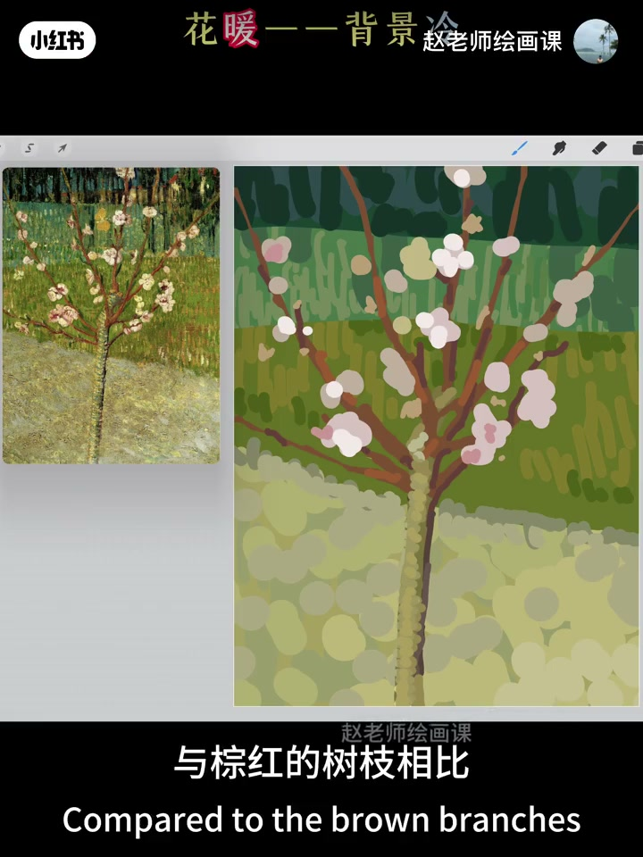
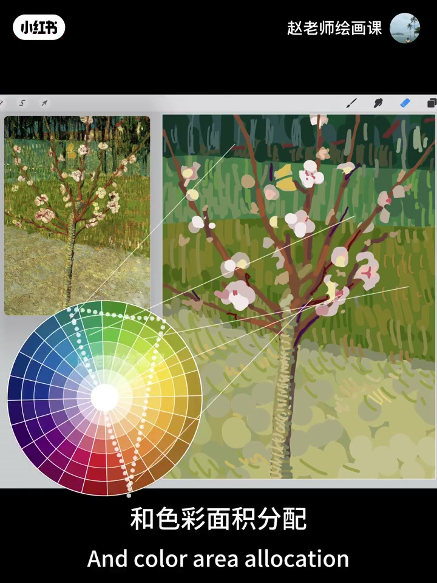

内容要点
赵老师以梵高《盛开的杏树》拆色调与主体：背景多种倾向的绿并置且暖绿占面，相邻色托出盎然氛围；棕红树枝与粉色花瓣相对绿背景成补色与冷暖，再用「相对绿偏暖、相对棕红偏冷」加明暗对比把花推成主角。树干画成黄绿是为融入背景、把视线留给花枝。收束强调克制用色范围与科学面积配比，并把杏树读成生命浓烈而短暂的自况。
知识结构
不同倾向绿并置，暖绿面积大；相邻色增加色调氛围，托出生机。
棕红树枝＋粉花瓣相对绿背景＝补色与冷暖，主体更突出；棕红偏暖更匹配色调。
花相对绿偏暖、相对棕红偏冷；再加明暗对比。树干黄绿融入背景，视线留在花枝。
克制用色范围＋面积分配成就杰作；杏树如生命的灿烂与悲壮。
先用并置暖绿建色调氛围，再用补色／冷暖与明暗把花瓣推成唯一主角；面积与色域要克制，别让树干抢戏。
00:00-00:31色调感：暖绿并置托出生机
开场问为什么梵高笔下的绿又鲜又高级，本期解析《盛开的杏树》色彩秘密。首先是色调感：背景中不同倾向的绿并织在一起，且暖绿占较大面积；再加暖绿的色彩联想，画面氛围生机盎然。
作者点出常见办法：在背景使用相邻色来增加色调氛围。00:15 右屏三道绿带把「不同倾向的绿并置」做成可指认证据。

00:31-00:51树枝与花瓣：补色＋冷暖突出主体
来到主体：棕红树枝与粉色花瓣相对整体绿背景形成补色，也是冷暖关系，主体更突出。色环验证后补充——树枝棕红偏暖，富有生命力，也更匹配画面色调。
00:33 简化色块清楚标出棕红线与粉花瓣落在绿带上。

00:51-01:45花瓣双手段：冷暖分层＋明暗对比
主体内部还有主次：花比树枝更重要。突出花瓣的两招——相对背景绿，花瓣红偏暖；相对棕红树枝，花瓣粉红又偏冷；再加较强明暗对比。丰富冷暖加明度，让花成为最精彩主角。这就叫用色彩对比突出主体。
小问题：树干为何画成黄绿？作者个人认为可与背景融合，帮视觉更直接停在上面的树枝与花瓣，顽强生命力由此凸显。01:10 顶栏「花暖——背景冷」把温度关系钉死。

01:45-02:15用色范围与面积：克制成就杰作
最后分析用色选择与色彩面积分配：克制的用色范围和科学的面积配比成就这幅杰作。夜色中绽放的杏树更像梵高本人——一生孤苦却深爱世界，生命浓烈短暂，最终留下灿烂与悲壮。
01:50 色环三角色域与色块连线，把「面积分配」从口号变成可见结构。

完整转录（56段）
以下文本由 Whisper medium 模型自动转录，可能存在少量识别误差，已尽可能修正。
为什么樊高笔下的绿既鲜艳浓郁又高级好看
本期让我们一起解析这幅盛开的信书
色彩搭配的秘密
首先是色调感
背景中不同倾向的绿并织在一起
且暖绿占了较大的面积
再加上暖绿的色彩联想
使我们感受到了生机盎然的画面氛围
在背景中使用香林色
是增加画面色调氛围的常见办法
来到主体物
棕红的树枝还有粉色花瓣
与整体背景形成一种补色关系
也是一种冷暖关系
这使得主体更加突出
我们在色环上验证一下
同时树枝的棕红是一种偏暖的红
显得富有生命力
也更匹配画面的色调
另外主体里面也有主刺之分
与树枝相比花显然更重要
这里梵高用了什么手段
来突出花瓣这个核心元素
第一呢是与背景的绿相比
花瓣的红偏暖
与棕红的树枝相比
花瓣的粉红又偏冷
第二较强的明暗对比
也就是说丰富的冷暖加明度对比
两个办法
让花成为了画面最精彩
最吸引人的主角
这就叫用色彩对比突出主体
有一个小问题
为什么把树干画成黄绿色
个人认为
这样处理可以与背景相融合
能够帮助视觉更直接的
停留在上面的树枝和花瓣中
顽强而旺盛的生命力
就这样被凸显出来了
最后呢
我们分析一下这幅画中的用色选择
和色彩面积分配
刻制的用色范围和科学的面积配比
成就了这幅截作
这颗夜色中绽放的信数
更像是樊高本人
一生孤苦
但深爱着这个世界
生命的浓烈和短暂
最终只留下无限的灿烂和悲壮
好了今天就说到这
了解色彩系统课程请自信
下期见
拜拜